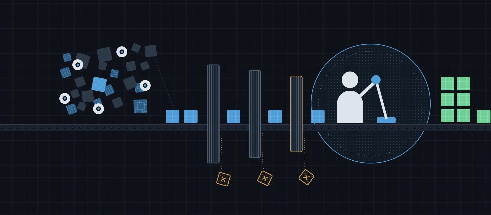

A software factory runs at the speed you can verify
How I built my software factory, one bottleneck at a time, what it caught this week, and what I'm building next. The pace is set by how fast I can trust a change, not how fast agents write one.

Everyone is trying to build a software factory now. Agents write most of the code, and the question has moved from “can they” to “how do you run them”.
I build AstroPulse with several AI agents working in parallel. For months I assumed the limit was how fast they could write code. It wasn’t. The limit was how fast I could trust what they wrote. Each stage below is a piece of that trust, in the order I built it.
Start: the whole platform, on every engineer’s machine#
A change crosses the control plane, the agent on the customer’s cluster, the tunnel, the CLI and the console. Mocks can’t tell you whether that chain still holds, so every engineer and every agent gets all of it locally. Every service runs the committed HEAD, or “verified” means nothing.
Agents in parallel, one integration tree#
- agents, one worktree each
- review
- local integration tree
- deployed to kind
Related issues go into one PR. The integration tree is never pushed; it exists so the branches meet before main does.
A lab for everything#
- Picked by the diffeach lab declares the paths it covers
- Isolated runsown run ID, own names, own logs
- Red means you broke itknown failures are passed in as a baseline
- Nothing unmappedevery command, operation and add-on has a lab or an open issue
- Nightly on mainruns every lab; started by hand today, scheduled next
- In CI nextthe same verifier and labs
Each lab gets its own run ID and resource names, and compares against a baseline of known failures so a red run always means the change in front of you broke something.
Batches, one verdict#
- ready PRs
- fresh copy of main
- deploy together
- every safe lab
- one verdict
Individual PRs can both pass in isolation and still conflict on main. The batch deploys every ready PR together on a fresh copy of main and runs every non-destructive lab for a single go/no-go verdict.
Every surface, every client#
- CLIthe same workflow, run both ways
- Consolelight, dark and phone width, a screenshot per page
- Python SDKregenerated, built and compiled in CI
- MCP serverre-pinned to the new CLI on release
- Docs and websitea sync PR with every release
- The API owns the wordsa refusal reads the same sentence everywhere
CI regenerates everything and fails on any diff, and refuses a breaking API change. A last step checks every artifact the way a user gets it.
Gates aimed at how agents cheat#
- commit
- lint errors
- push
- stale generated code
- PR checks
- fixed sleeps
- blind retries
- matching error text
- narrating comments
- internal names
- secrets
- CVEs
- agent review
- grading its own work
- breaking a client
- human gate
- deleted tests
- new skips
- removed assertions
- shims
- auth changes
- a person merges
- an agent merging
Review is independent, with a neutral brief, and some PRs get a second model from another vendor. When review catches a mistake, it becomes a rule in the AGENTS.md every agent reads first. The rule at the top: the human’s job is decision-making, not mechanics.
The proof#
This week the second model caught a console route that broke deleting an app named “sources”. The independent reviewer caught a new API field that broke the CLI’s get-then-apply round trip.
Same agents. They didn’t get better at writing code that week; I got better at checking what they wrote.
What’s still hard, and the plan#
- issue
- worktree
- verify
- review
- human merge
- nightly
- release
The left half runs every day. The right half is what I’m building now, and it’s what turns a fast workshop into a factory.
The workshop got fast at writing and merging, and now it waits on itself—serial labs alone take about half of every batch run.
- labs run one at a timeindependent labs in parallel
- known failures still runknown failures skipped
- every reload restarts everythingreload only what changed
- one lock held for the whole batchlock only around the build
- one shared clusteran environment per agent
- labs on a laptopthe same labs in CI
- nightly started by handnightly every night, green opens a release PR
- merges against a moving maina merge queue
- I read the checksrequired checks block the merge
- upkeep waits on meweekly agent routines open draft PRs
- I review at the gateI write the rules and checks
I started by writing the code. Now I review at the gate. Next I mostly write the rules and checks the agents work within—building on the same platform composition and control plane boundaries. One thing doesn’t move: merging stays a deliberate human act.
If you’re running agents in parallel and hitting the verification wall too, tell me what’s bottlenecking your loop.